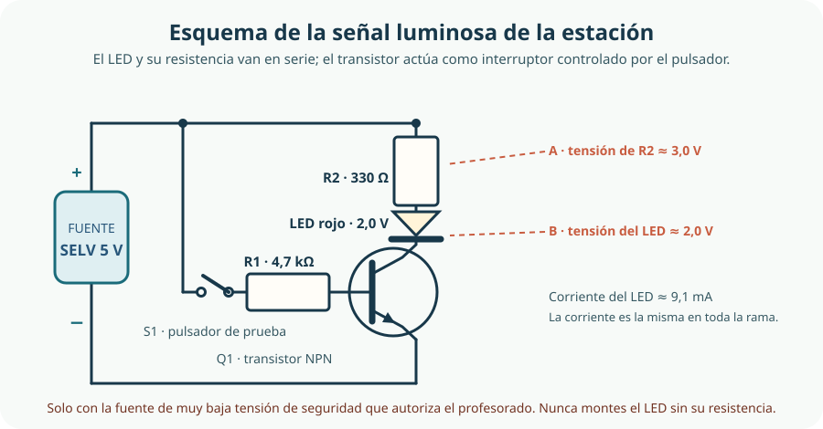

En el bloque anterior construimos un organizador modular accesible para el aula-taller. En este bloque ese organizador crece hasta convertirse en una estación automática segura de clasificación y señalización de piezas: un puesto donde cada pieza tiene su sitio, donde la estación avisa de lo que ocurre y donde ninguna solución depende de cables improvisados. Para que la estación «hable» hacen falta circuitos: algo que detecte, algo que decida y algo que avise. En este tema montamos y medimos la parte eléctrica más sencilla de todas: la señal luminosa que indica si un puesto está libre u ocupado y si la estación está en servicio o detenida.
- identificar las magnitudes eléctricas básicas —tensión, intensidad, resistencia y potencia— con su símbolo, su unidad y su instrumento de medida;
- aplicar la ley de Ohm para calcular la magnitud que falta y comprobar el resultado midiendo;
- decidir si dos componentes están en serie o en paralelo, calcular la resistencia equivalente y explicar cómo se reparten la tensión y la corriente;
- distinguir corriente continua y corriente alterna y justificar por qué en el aula se trabaja únicamente con la fuente de muy baja tensión de seguridad que autoriza el profesorado;
- reconocer la simbología de resistencias, condensadores, diodos, LED y transistores, y explicar la función de cada uno;
- simular y montar la señal luminosa de la estación calculando la resistencia del LED y verificando la corriente con el polímetro sin superar los límites de ningún componente.
1. La señal empieza por una corriente: tensión, intensidad, resistencia y potencia
Un circuito eléctrico es un camino cerrado por el que circula carga eléctrica. Basta con que se abra en un punto —un interruptor, un cable suelto, una pata del LED que no entra en la placa— para que deje de circular corriente y el LED se apague. En cualquier circuito reconocemos siempre los mismos papeles: una fuente que aporta la energía, unos conductores que la llevan, uno o varios componentes que la transforman (luz, calor, movimiento) y elementos de control que abren o cierran el paso.
Para describir lo que ocurre dentro del circuito utilizamos cuatro magnitudes. Es imprescindible no confundirlas ni mezclar sus unidades.
| Magnitud | Símbolo | Unidad | Qué indica | Cómo se mide | En nuestra estación |
|---|---|---|---|---|---|
| Tensión | V | voltio (V) | Energía que la fuente entrega a cada unidad de carga entre dos puntos del circuito; se llama también diferencia de potencial. | Voltímetro, conectado en paralelo con el elemento que se estudia. | 5 V entre los dos terminales de la fuente aprobada. |
| Intensidad | I | amperio (A) | Cantidad de carga que atraviesa una sección del conductor cada segundo. | Amperímetro, conectado en serie, abriendo el circuito. | Unos 9 mA circulando por el LED. |
| Resistencia | R | ohmio (Ω) | Oposición que presenta un componente al paso de la corriente. | Óhmetro, con el componente desconectado y sin tensión. | 330 Ω limitan la corriente del LED. |
| Potencia | P | vatio (W) | Energía transformada o transferida cada segundo. | Se calcula (P = V · I) o se mide con un vatímetro. | Unos 45 mW en la señal luminosa. |
Las unidades eléctricas forman parte del Sistema Internacional. El amperio es una de las unidades básicas y el voltio, el ohmio y el vatio se derivan de ella.[1] En los circuitos escolares aparecen casi siempre con prefijos, porque los valores son pequeños: 1 mA = 0,001 A y 1 kΩ = 1 000 Ω. Las reglas de escritura de unidades —símbolo detrás de la cifra, con un espacio, y prefijo unido a la unidad— proceden de la misma familia de normas.[2] Escribir «330Ω» o «9ma» es una falta técnica: se escribe 330 Ω y 9 mA. Fíjate en la tensión: el símbolo de la magnitud se escribe en cursiva (V) y el de su unidad, el voltio, en letra redonda (V), de modo que V = 5 V se lee «la tensión vale cinco voltios». Algunos libros y la norma internacional escriben la magnitud como U precisamente para evitar esa coincidencia; aquí usamos siempre V.
Una comparación ayuda a imaginarlo: la tensión se parece a la altura de un depósito, la intensidad al caudal que baja por la tubería y la resistencia a lo estrecha que es esa tubería. La comparación orienta, pero se agota pronto: en un circuito la energía se transfiere a los componentes y ninguna de las tres magnitudes «se gasta» como se agota el agua.
Potencia: cuánta energía se transforma cada segundo
La potencia relaciona las dos magnitudes que ya conocemos: P = V · I. En nuestro circuito, un LED que trabaja a 2 V con 9 mA consume 18 mW, y la resistencia que lo acompaña transforma en calor los 3 V restantes: 27 mW. Sumando, la fuente entrega unos 45 mW. Esa cifra parece diminuta y explica por qué la señal puede funcionar horas sin calentarse, pero también recuerda que toda la energía que entra en el circuito sale transformada: en luz y en calor.
2. La ley de Ohm: relacionar tensión, intensidad y resistencia
La ley de Ohm describe la relación que hoy usamos a diario: en un componente óhmico, a temperatura constante, la intensidad que lo atraviesa es proporcional a la tensión aplicada.[3] Esa relación se escribe de tres maneras, todas equivalentes:
- V = I · R — calcula la tensión si conoces intensidad y resistencia.
- I = V / R — calcula la intensidad si conoces tensión y resistencia.
- R = V / I — calcula la resistencia si conoces tensión e intensidad.
Con las unidades del Sistema Internacional, 1 V aplicado sobre 1 Ω produce exactamente 1 A. En electrónica se trabaja con miliamperios, así que la conversión de unidades es el primer paso y el error más frecuente.
Ejemplo resuelto 1 · Hallar la intensidad
Conectamos una resistencia de 330 Ω a la fuente de 5 V. ¿Cuánta corriente circula?
- Datos: V = 5 V, R = 330 Ω. Se pide I.
- Elegimos la forma adecuada: I = V / R.
- Sustituimos: I = 5 V / 330 Ω = 0,015 15 A.
- Pasamos a miliamperios: 0,015 15 A × 1 000 = 15,2 mA.
- Comprobación de sentido común: 330 Ω es una resistencia pequeña y 5 V no son muchos, así que una intensidad de unos 15 mA es razonable.
La potencia que transforma esa resistencia se calcula con la fórmula del apartado anterior: P = V · I = 5 V × 0,015 15 A ≈ 76 mW, muy por debajo de los 250 mW (¼ W) que suele admitir una resistencia escolar. Si el resultado hubiera sido, por ejemplo, 600 mW, la resistencia se calentaría y habría que elegir un componente de mayor potencia nominal, no solo otro valor.
Ejemplo resuelto 2 · Hallar la tensión
Una resistencia de 220 Ω está recorrida por 20 mA. ¿Qué tensión cae entre sus extremos?
- Datos: R = 220 Ω, I = 20 mA.
- Convertimos: 20 mA = 20 / 1 000 A = 0,020 A.
- V = I · R = 0,020 A × 220 Ω = 4,4 V.
- Comprobación: 4,4 V es un valor coherente con la escala de nuestra fuente de 5 V.
Ejemplo resuelto 3 · Hallar la resistencia
Queremos que entre los extremos de una resistencia caigan 9 V cuando circulan 30 mA. ¿Qué resistencia necesitamos?
- Datos: V = 9 V, I = 30 mA = 0,030 A.
- R = V / I = 9 V / 0,030 A = 300 Ω.
- Comprobación: comprobamos el resultado dando la vuelta al cálculo: I = 9 V / 300 Ω = 0,03 A. Coincide.
3. Serie y paralelo: repartir la tensión o repartir la corriente
Dos componentes están en serie cuando comparten un nodo y los recorre la misma corriente: solo hay un camino posible. Están en paralelo cuando comparten los dos nodos y, por tanto, la misma tensión: la corriente se reparte entre los dos caminos.[4] Saber cuál de las dos situaciones tenemos delante es imprescindible antes de calcular nada.
| Rasgo | En serie | En paralelo |
|---|---|---|
| Caminos para la corriente | Uno solo. | Varios, uno por rama. |
| Intensidad | La misma en todos los componentes. | Se reparte: la suma de las ramas es la corriente total. |
| Tensión | Se reparte entre los componentes y su suma es la de la fuente. | La misma en todas las ramas. |
| Resistencia equivalente | Se suman: Req = R1 + R2 + … | Resulta menor que la menor de ellas: 1/Req = 1/R1 + 1/R2 + … |
| Efecto al añadir un componente | Aumenta la resistencia total y disminuye la corriente. | Disminuye la resistencia total y aumenta la corriente total. |
| En la estación | El LED y su resistencia limitadora van siempre en serie. | Cada señal luminosa independiente forma su propia rama, en paralelo con las demás. |
Ejemplo resuelto 4 · Dos resistencias en serie
Conectamos en serie 220 Ω y 330 Ω a la fuente de 5 V. ¿Qué corriente circula y qué tensión cae en cada resistencia?
- Resistencia equivalente: Req = 220 Ω + 330 Ω = 550 Ω.
- Intensidad: I = V / Req = 5 V / 550 Ω = 0,009 09 A = 9,1 mA.
- Tensión en la primera: V1 = I · R1 = 0,009 09 A × 220 Ω = 2,0 V.
- Tensión en la segunda: V2 = I · R2 = 0,009 09 A × 330 Ω = 3,0 V.
- Comprobación: 2,0 V + 3,0 V = 5,0 V. La tensión de la fuente se ha repartido por completo.
Fíjate en el detalle más útil: la resistencia mayor se lleva la mayor parte de la tensión. Esa es la base del divisor de tensión, un recurso que reaparecerá cuando un sensor devuelva una señal que hay que adaptar a lo que el circuito puede leer.
Ejemplo resuelto 5 · Dos resistencias en paralelo
Las mismas dos resistencias, ahora en paralelo, conectadas a los 5 V.
- Resistencia equivalente de dos ramas: Req = (R1 · R2) / (R1 + R2) = (220 Ω × 330 Ω) / 550 Ω = 132 Ω.
- Comprobación de sentido común: 132 Ω es menor que 220 Ω, la más pequeña de las dos. En paralelo la resistencia equivalente siempre es menor que cualquiera de las ramas.
- Corriente total: I = V / Req = 5 V / 132 Ω = 0,037 9 A = 37,9 mA.
- Corriente por cada rama: I1 = 5 V / 220 Ω = 22,7 mA e I2 = 5 V / 330 Ω = 15,2 mA.
- Comprobación: 22,7 mA + 15,2 mA = 37,9 mA. La corriente total es la suma de las ramas y la rama de menor resistencia es la que más corriente recibe.
4. Corriente continua, corriente alterna y por qué trabajamos a muy baja tensión
Hasta aquí hemos supuesto que la tensión de la fuente no cambia de sentido. Es lo que ocurre en la corriente continua (CC): la polaridad positiva y negativa se mantiene y la corriente circula siempre en el mismo sentido. Nuestros circuitos de señal son de corriente continua a pocos voltios.
En la corriente alterna (CA) la polaridad se invierte periódicamente y la señal describe una onda. La red eléctrica que llega a las viviendas en España es de corriente alterna: el reglamento electrotécnico fija como valores habituales 230 V entre fase y neutro, 400 V entre fases y una frecuencia de 50 Hz.[5] La frecuencia indica cuántos ciclos completos hay cada segundo; a 50 Hz, un ciclo dura 1 / 50 = 0,02 s, es decir, 20 ms. Cuando hablamos del «valor» de una tensión alterna nos referimos a un valor eficaz, el que produciría el mismo efecto que una corriente continua equivalente.
| Rasgo | Corriente continua (CC) | Corriente alterna (CA) |
|---|---|---|
| Polaridad | Constante: hay un borne positivo y uno negativo. | Cambia periódicamente de sentido. |
| Forma de la señal | Línea horizontal, o variaciones suaves si hay sensores implicados. | Onda senoidal. |
| Dónde aparece | Fuentes de laboratorio de baja tensión, componentes electrónicos alimentados por ellas. | Red eléctrica de viviendas y talleres: 230 V entre fase y neutro, 50 Hz. |
| Qué hacemos con ella en clase | Es la única con la que montamos y medimos: siempre desde la fuente aprobada. | No se toca ni se mide: se estudia como concepto. Cualquier intervención es trabajo de personal autorizado. |
Qué significa «muy baja tensión de seguridad»
La electricidad no avisa: una corriente relativamente pequeña a través del cuerpo humano puede producir contracciones musculares, dificultad respiratoria, quemaduras o alteraciones del ritmo cardiaco.[8] Por eso la protección se diseña por niveles. Se habla de baja tensión cuando la tensión nominal no supera los 1 000 V en alterna, y de muy baja tensión cuando no excede los 50 V en alterna ni los 75 V en continua.[6] La protección simultánea frente a los contactos directos y los indirectos se consigue con la muy baja tensión de seguridad (MBTS) —en inglés, SELV—, cuyas condiciones concretas de tensión, fuente de alimentación de seguridad y características de los circuitos están definidas por normas técnicas específicas.[7] Esta es la razón por la que nuestros montajes solo pueden alimentarse desde una fuente SELV aprobada por el profesorado.
- Nunca se conecta el montaje a la red eléctrica, a un enchufe, a una regleta ni a una fuente de ordenador: 230 V no son un valor de trabajo escolar.
- Nunca se usan pilas, baterías, cargadores ni acumuladores por iniciativa propia. Si una actividad necesitara otra fuente, la autoriza el profesorado y se comprueba que cumple MBTS.
- La única fuente admitida es la que el profesorado entrega: se acepta su tensión, su límite de corriente y sus bornes tal como vienen indicados.
- Tampoco se tocan aparatos conectados, ni se abren enchufes, ni se manipulan cables de la instalación del aula-taller, estén encendidos o apagados.
Cada contacto con una parte activa es un contacto directo; tocar una carcasa metálica que se ha puesto en tensión por un fallo de aislamiento es un contacto indirecto.[6] Las dos situaciones se evitan con la misma estrategia general: no trabajar con tensión cuando se puede trabajar sin ella. En el aula, «trabajar sin tensión» significa apagar la fuente antes de cambiar cualquier conexión.
5. Componentes y simbología: de la resistencia al transistor
Los esquemas eléctricos no dibujan los objetos como son, sino que los sustituyen por símbolos normalizados que cualquier técnica o técnico entiende igual en cualquier país. La referencia internacional es la norma de símbolos gráficos para diagramas, mantenida por el comité técnico 3 de la Comisión Electrotécnica Internacional y consultable en su base de datos.[9] Dibujar un circuito con símbolos correctos es tan importante como montarlo bien: el esquema es lo que permitirá a otra persona reproducirlo.
| Componente | Cómo se dibuja | Para qué sirve | ¿Tiene polaridad? | Precaución |
|---|---|---|---|---|
| Resistencia | Rectángulo alargado (simbología europea) con un valor y una tolerancia asociados. | Limita la corriente, reparte tensión y fija niveles de señal. | No. | Comprobar el valor con el código de colores o con el óhmetro y elegir una potencia nominal suficiente. |
| Resistencia variable | El mismo rectángulo atravesado por una flecha. | Permite ajustar una corriente o una tensión. | No. | Girarla sin forzar y fijar el valor antes de alimentar el circuito. |
| Condensador | Dos líneas paralelas enfrentadas, separadas por un hueco; en los polarizados, una de ellas es curva. | Almacena carga, suaviza variaciones bruscas y produce retardos. | Solo los electrolíticos, que llevan marcado el negativo. | Respetar la polaridad y descargarlo antes de manipularlo: puede guardar carga aunque la fuente esté apagada. |
| Diodo | Triángulo apoyado en una barra, con la corriente entrando por el lado del triángulo. | Deja pasar la corriente en un solo sentido y la bloquea en el contrario. | Sí: ánodo y cátodo. | Localizar la franja del cátodo en el cuerpo del componente antes de insertarlo. |
| LED | Un diodo con dos flechas que salen de él, indicando que emite luz. | Transforma la corriente en luz y avisa del estado de un sistema. | Sí: patilla larga, ánodo; lado plano, cátodo. | Siempre con una resistencia en serie; comprobar tensión y corriente en la hoja de características y no mirarlo de cerca ni con instrumentos ópticos.[16] |
| Transistor | Círculo con tres terminales —base, colector y emisor— y una flecha sobre el emisor. | Funciona como interruptor controlado: una corriente pequeña por la base permite el paso de otra mayor entre colector y emisor. | Sí: hay que identificar bien las tres patillas. | No intercambiar colector y emisor; comprobar la disposición de patillas en la hoja de características. |
| Interruptor o pulsador | Un tramo de conductor con un contacto que se abre y se cierra. | Controla manualmente el paso de la corriente. | No. | Comprobar su estado, abierto o cerrado, midiendo continuidad antes de alimentar. |
Leer el valor de una resistencia
Las resistencias pequeñas llevan su valor impreso en forma de bandas de color. El código está normalizado internacionalmente y es el mismo en cualquier país.[10] En una resistencia de cuatro bandas, las dos primeras dan las cifras, la tercera el multiplicador y la cuarta la tolerancia.
| Color | Cifra | Multiplicador (tercera banda) |
|---|---|---|
| Negro | 0 | × 1 Ω |
| Marrón | 1 | × 10 Ω |
| Rojo | 2 | × 100 Ω |
| Naranja | 3 | × 1 kΩ |
| Amarillo | 4 | × 10 kΩ |
| Verde | 5 | × 100 kΩ |
| Azul | 6 | × 1 MΩ |
| Violeta | 7 | — |
| Gris | 8 | — |
| Blanco | 9 | — |
En la cuarta banda, el dorado indica una tolerancia de ±5 % y el plateado, de ±10 %. Una tolerancia del 5 % sobre 330 Ω significa que la resistencia real estará entre 313 Ω y 347 Ω: si el cálculo sale ajustado, esa variación puede notarse en la medida.
- 330 Ω = naranja, naranja, marrón + dorado (33 × 10 Ω).
- 220 Ω = rojo, rojo, marrón + dorado (22 × 10 Ω).
- 470 Ω = amarillo, violeta, marrón + dorado (47 × 10 Ω).
- 1 kΩ = marrón, negro, rojo + dorado (10 × 100 Ω).
El diodo y el LED: corriente en un solo sentido
Un diodo conduce cuando se polariza en sentido directo —ánodo positivo respecto al cátodo— y bloquea el paso en sentido inverso.[12] El LED es un diodo que emite luz al conducir. Dos consecuencias prácticas: hay que respetar su polaridad, y hay que limitar su corriente, porque si se conecta directamente a la fuente intentará absorber toda la que esta pueda dar y terminará destruido.[11]
Los datos que necesitamos no se adivinan: se leen en la hoja de características del LED. Allí aparecen la tensión directa (VLED, que depende del color: en torno a 2 V en los rojos y amarillos y unos 3 V en los azules y blancos) y la corriente máxima admisible (los LED indicadores de 5 mm suelen admitir del orden de 20 mA en funcionamiento continuo).[11] En el aula trabajamos con un valor de cálculo más conservador, 10 mA, y comprobamos siempre la hoja del componente que tengamos en la mano. Los LED actuales son dispositivos semiconductores muy eficientes, duran muchas más horas que las lámparas convencionales y admiten regulación de brillo y color.[15]
El condensador: guardar carga y suavizar la señal
Un condensador almacena carga eléctrica. Su capacidad se mide en faradios (F), una unidad enorme para el tamaño de los componentes escolares, así que se trabaja con microfaradios (1 µF = 0,000 001 F), nanofaradios o picofaradios. Un condensador se opone a los cambios bruscos de tensión: por eso se usa para filtrar las variaciones de una fuente o para introducir un retardo, por ejemplo que la luz de «ocupado» se apague un instante después de que la pieza salga del puesto y no parpadee con cada vibración. Los electrolíticos tienen polaridad y pueden conservar carga después de apagar la fuente, así que se descargan antes de desmontarlos.[14]
El transistor como interruptor
El transistor bipolar tiene tres terminales: base (B), colector (C) y emisor (E). Es tentador imaginarlo como un amplificador, pero en nuestra estación lo usamos como interruptor controlado: si no llega corriente a la base, entre colector y emisor no pasa nada y el LED permanece apagado; si llega una corriente pequeña por la base, el transistor se satura, se comporta casi como un cable cerrado y el LED luce con toda su intensidad.[13]
Esto tiene una ventaja enorme: el circuito de control no necesita dar la corriente del LED, solo una fracción. Cuando en temas posteriores la señal venga de un sensor o de una salida de placa controladora —que no pueden entregar mucha corriente— el transistor seguirá siendo la pieza que se encargue del trabajo pesado.
6. Del esquema al montaje: simulador y placa de pruebas
Un circuito se construye en cuatro pasos y en un orden que no conviene alterar: primero se dibuja el esquema con símbolos, después se simula para comprobar los valores, después se monta sobre la placa de pruebas y por último se mide y se documenta. Cuando se hace al revés, el montaje deja de ser un experimento y se convierte en un tanteo.
Fuente, resistencia, LED, transistor y control, unidos con símbolos normalizados. Se anotan los valores previstos y se marca dónde se medirá.
Se reproduce el esquema en un simulador de circuitos y se comprueban tensiones y corrientes antes de tocar un componente real.
Se identifican valores y polaridades, se comprueban con el óhmetro y se colocan los componentes con la fuente apagada.
Se enciende la fuente, se comprueba que el LED responde al control y se anota si algo se calienta o huele de forma anormal.
Se miden tensiones e intensidades en los puntos marcados y se comparan con los valores del esquema y del simulador.
Se anotan los valores reales, la versión del montaje y las diferencias; si algo no cuadra, se busca la causa antes de cambiar componentes al azar.
La placa de pruebas: cómo está conectada por dentro
La placa de pruebas (o protoboard) permite montar sin soldar. Por dentro esconde tiras metálicas: en la zona central, cada fila de cinco agujeros está unida entre sí, de modo que todo lo que se inserta en esa fila queda conectado. Un canal central separa las dos mitades y evita cortocircuitos entre las patillas enfrentadas. En los laterales, dos líneas de agujeros —los raíles o buses— recorren la placa en vertical y suelen reservarse para la alimentación: uno para el positivo y otro para el negativo.[17]
- Cada componente se puentea entre dos filas distintas: si las dos patillas cayeran en la misma fila, quedarían cortocircuitadas y el componente no haría nada.
- Los cables de la fuente van a los raíles; desde allí se reparte la alimentación a cada rama.
- Se monta con la fuente apagada y se comprueba la continuidad de las conexiones antes de alimentar.
- Los cables largos y cruzados dificultan encontrar un fallo: se ordenan por colores y por recorridos.
El simulador: qué comprueba y qué no
Un simulador de circuitos como los que ofrecen entornos educativos permite dibujar el esquema, colocarlo sobre una placa virtual y leer tensiones y corrientes sin riesgo alguno.[18] Es una herramienta excelente para preparar el montaje y para entender el reparto de tensiones, pero no es la realidad:
| Aspecto | El simulador lo resuelve bien | Solo la medida real lo confirma |
|---|---|---|
| Valores eléctricos | Calcula tensiones e intensidades de un circuito correctamente dibujado. | Si el circuito que hemos montado es el mismo que el dibujado. |
| Componentes | Trabaja con valores ideales y perfectos. | Que la resistencia sea realmente de 330 Ω, con su tolerancia, y que el LED tenga la tensión directa de su hoja. |
| Conexiones | Supone contactos perfectos. | Que un agujero de la placa tenga buen contacto y que un cable no esté roto. |
| Calor y averías | No reproduce calentamientos ni componentes dañados. | Que nada se caliente, que el LED no se degrade y que la fuente no se sobrecargue. |
7. La señal luminosa de la estación: cálculo del LED y verificación
La estación necesita decir de un vistazo qué está ocurriendo. La señal luminosa cumple esa función y plantea tres decisiones de diseño antes de tocar un solo componente: qué estados debe distinguir, dónde debe verse y cómo se alimenta sin riesgo.
- Qué estados: como mínimo, «puesto libre» y «puesto ocupado»; conviene distinguir también «estación fuera de servicio», que no es lo mismo que un puesto ocupado.
- Dónde: el LED debe verse desde la posición real de trabajo, sin obligar a inclinarse ni a acercarse, y sin quedar oculto por las piezas.
- Cómo se alimenta: desde la fuente SELV aprobada, con su resistencia limitadora y, si la señal se dispara con un sensor, con un transistor que haga de interruptor.
- Accesibilidad: el color no puede ser la única pista. La posición, un icono y una etiqueta con texto acompañan siempre al LED, y la verificación incluye comprobar que la señal se entiende sin depender de distinguir colores.[15]

Ejemplo resuelto 6 · Calcular la resistencia del LED paso a paso
Tenemos un LED rojo cuya hoja de características indica una tensión directa de 2,0 V y una corriente de trabajo de 10 mA. La fuente aprobada entrega 5 V. ¿Qué resistencia necesitamos?
- Entender el reparto: LED y resistencia están en serie, así que la tensión de la fuente se reparte entre los dos. La resistencia debe quedarse con lo que el LED no necesita: VR = Vfuente − VLED = 5 V − 2,0 V = 3,0 V.
- Aplicar la ley de Ohm: queremos que por esa resistencia circulen 10 mA, que son 0,010 A. R = VR / I = 3,0 V / 0,010 A = 300 Ω.
- Elegir un valor disponible: 300 Ω no está entre los valores que se fabrican habitualmente. Se elige el valor comercial más próximo que no aumente la corriente, es decir, el inmediatamente superior: 330 Ω.
- Recalcular la corriente real: I = 3,0 V / 330 Ω = 0,009 09 A = 9,1 mA. Está por debajo de los 10 mA previstos. Perfecto.
- Comprobar la potencia: P = VR · I = 3,0 V × 0,009 09 A ≈ 27 mW, muy lejos de los 250 mW de una resistencia habitual. No hay peligro de calentamiento.
- Comprobar la elección rechazada: con 220 Ω, la corriente sería 3,0 V / 220 Ω = 13,6 mA, por encima de la corriente de trabajo del LED. Habría lucido algo más, y su vida se habría acortado. Esa es la razón de no bajar nunca al valor inferior «para que luzca más».
| LED (valores de la hoja) | Fuente SELV | R calculada | R elegida | Corriente resultante |
|---|---|---|---|---|
| Rojo · VLED = 2,0 V | 5 V | 300 Ω | 330 Ω | 9,1 mA |
| Verde · VLED = 2,2 V | 5 V | 280 Ω | 330 Ω | 8,5 mA |
| Azul · VLED = 3,1 V | 5 V | 190 Ω | 220 Ω | 8,6 mA |
| Rojo · VLED = 2,0 V | 9 V | 700 Ω | 820 Ω | 8,5 mA |
Todos los valores de la tabla se han calculado con el mismo procedimiento y en todos los casos la corriente resultante queda por debajo de la corriente de trabajo del LED. Los datos de partida son supuestos didácticos: la tensión real de cada LED se lee en su hoja, y con ella se repite el cálculo.
Ejemplo resuelto 7 · La resistencia de base del transistor
Queremos que el transistor encienda el LED anterior cuando se cierre un pulsador conectado a los 5 V. ¿Qué resistencia hay que poner entre el pulsador y la base?
- Corriente que debe controlar: por el colector circularán unos 9,1 mA, los mismos que calculamos para el LED.
- Corriente de base suficiente: el transistor amplifica la corriente, con ganancias que suelen ser de un centenar de veces. Con una corriente de base de 1 mA se garantiza de sobra la saturación, aunque el transistor concreto sea poco «generoso». Se toma 1 mA como valor de cálculo.
- Restar la tensión de la unión: entre base y emisor caen aproximadamente 0,7 V, así que la resistencia se queda con 5 V − 0,7 V = 4,3 V.
- Aplicar la ley de Ohm: R = 4,3 V / 0,001 A = 4 300 Ω = 4,3 kΩ.
- Elegir el valor disponible: se escoge 4,7 kΩ, el valor comercial más próximo. La corriente de base real será 4,3 V / 4 700 Ω ≈ 0,91 mA.
- Comprobar el margen: 0,91 mA por un centenar de veces de ganancia son unos 91 mA disponibles, mucho más de los 9,1 mA que necesita el LED. El transistor se saturará con holgura y el LED lucirá a plena intensidad.
Ejemplo resuelto 8 · Dos LED y una sola fuente
¿Podemos encender dos LED rojos de 2,0 V con la fuente de 5 V?
- En serie: las tensiones directas se suman: 2,0 V + 2,0 V = 4,0 V. La resistencia se queda con 1,0 V y, si queremos 10 mA, debe valer 1,0 V / 0,010 A = 100 Ω. Elegimos 120 Ω para quedarnos por debajo: la corriente real será 1,0 V / 120 Ω = 8,3 mA. Los dos LED lucen igual, pero comparten el mismo camino: si uno falla, se apagan los dos.
- En paralelo: cada LED necesita su propia resistencia de 330 Ω y su propia rama. La corriente total de la fuente será la suma de las dos ramas, unos 18 mA. Es más cableado, pero cada señal es independiente.
- Lo que no se hace: dos LED en paralelo con una única resistencia compartida. La corriente se repartiría de forma imprevisible y uno de los dos podría dañarse.
Verificar la señal con datos, no con impresiones
Que el LED luzca no demuestra que el circuito esté bien. La verificación consiste en medir y comparar con lo previsto. Antes de dar la versión V05 por buena, el equipo registra estos datos:
| Qué se comprueba | Cómo se mide | Valor previsto | Criterio de aceptación |
|---|---|---|---|
| Tensión de la fuente | Polímetro en CC, en paralelo con los bornes de la fuente. | La que indique el profesorado para la fuente aprobada. | Coincide con el valor de trabajo y no se modifica durante la prueba. |
| Tensión entre los extremos de la resistencia (punto A) | Polímetro en CC, en paralelo con la resistencia. | 3,0 V | ±10 % respecto al previsto. |
| Tensión del LED (punto B) | Polímetro en CC, en paralelo con el LED. | 2,0 V | Coherente con la hoja de características del LED utilizado. |
| Corriente del LED | I = VR / R con la tensión medida en A, o amperímetro en serie si el docente lo autoriza. | 9,1 mA | Igual o menor que la corriente de trabajo del LED. |
| Comparación con la simulación | Se contrasta la lectura real con la del simulador del mismo esquema. | Mismos valores dentro del margen. | Diferencias explicadas por la tolerancia de la resistencia y por la tensión directa real del LED. |
| Calentamiento | Observación y tacto con la fuente ya apagada, tras unos minutos de funcionamiento. | Sin calentamiento apreciable. | Ningún componente caliente ni olor anómalo durante la prueba. |
| Legibilidad de la señal | Prueba con una persona ajena al equipo desde la posición de trabajo. | Estado identificable a simple vista. | Se distingue el estado sin depender solo del color y sin acercarse al LED. |
8. Medir con el polímetro y trabajar con seguridad
El polímetro es el instrumento que convierte nuestras suposiciones en datos. Mide tensión, intensidad, resistencia y continuidad, pero cada magnitud exige una conexión distinta: si se conecta mal, la lectura es falsa y el instrumento puede dañarse.[19]
| Qué queremos saber | Función del polímetro | Cómo se conecta | Precaución |
|---|---|---|---|
| Tensión entre dos puntos | V en corriente continua (V⎓) | En paralelo, punta positiva en el punto de mayor potencial, con el circuito en funcionamiento. | Elegir un rango superior al valor esperado; si se desconoce, empezar por el más alto. |
| Intensidad que atraviesa un componente | mA en corriente continua | En serie: hay que abrir el circuito y hacer que la corriente pase por el instrumento. | Colocar bien los bornes del polímetro y volver a cerrar el circuito a través de él; solo con autorización del docente. |
| Resistencia de un componente | Ω | Componente desconectado del circuito y sin tensión, con las puntas en sus dos patillas. | Nunca con el circuito alimentado; no tocar las puntas con los dedos, porque el cuerpo altera la lectura. |
| Si un cable o un contacto conduce | Continuidad (zumbido) | En las dos puntas del tramo, sin tensión. | Perfecto para descubrir un cable roto o un interruptor mal colocado antes de alimentar. |
Truco de medida segura para este proyecto: para conocer la corriente del LED no hace falta romper el circuito. Basta medir la tensión entre los extremos de su resistencia y dividir por el valor de la resistencia. Es una lectura en paralelo, más sencilla y menos expuesta a errores de conexión.
Las reglas de trabajo de la estación
- Solo con la fuente autorizada. Se trabaja con la fuente de muy baja tensión de seguridad que entrega el profesorado; nunca con la red eléctrica, ni con un enchufe, ni con una fuente de ordenador o de cargador.
- Nada de pilas ni baterías por iniciativa propia. Si una actividad las necesitara, la fuente la autoriza el profesorado y se comprueba que cumple las condiciones de MBTS.
- Montar siempre sin tensión. La fuente se apaga antes de colocar, mover o retirar cualquier componente, y se espera a que los condensadores se descarguen.
- Revisar cables y puntas. Un conductor pelado, una punta floja o un cable roto se retiran y se avisa; no se reparan con cinta improvisada.
- Superficie seca y manos secas, sin anillos, pulseras, colgantes ni mangas sueltas que puedan engancharse o cerrar un contacto.
- Comprobar polaridades de la fuente, del LED, del diodo y de los condensadores electrolíticos antes de alimentar el circuito.
- Respetar los límites de los componentes: valor y potencia de cada resistencia, corriente máxima de cada LED, tensión admisible de cada condensador.
- Evitar cortocircuitos. Nunca se unen los dos terminales de la fuente con un cable ni se conecta un componente sin resistencia. Ante calor, olor, humo o un comportamiento extraño: apagar la fuente, avisar y no tocar hasta que se enfríe.
- Trabajar con supervisión. Antes de una prueba nueva se explica qué se va a medir, con qué rango y qué se espera obtener.
- Una prueba cada vez. Si algo no funciona, se desconecta, se revisa el esquema y se comprueba conexión por conexión; no se acumulan tentativas «a ver si suena la flauta».
Estas reglas se aplican a un circuito de pocos voltios, porque un montaje pequeño también puede deteriorarse: un LED conectado sin resistencia se destruye en segundos, un condensador cargado descarga a través del dedo y una fuente sometida a un cortocircuito se calienta. La seguridad no depende de la tensión: depende de respetar siempre el mismo procedimiento.
Registro de medidas de la puesta en servicio
Los datos se anotan en la documentación del proyecto en cuanto se obtienen, no al final de la sesión. Esta tabla vacía puede copiarse en la memoria de la estación:
| Punto de medida | Valor previsto | Valor medido | Instrumento y rango | Conclusión |
|---|---|---|---|---|
| Tensión de la fuente | Según la fuente aprobada | |||
| Tensión en la resistencia (punto A) | 3,0 V | |||
| Tensión en el LED (punto B) | ≈ 2,0 V | |||
| Corriente calculada del LED | ≈ 9,1 mA | |||
| Resistencia real de la resistencia limitadora | 330 Ω ± 5 % |
Comprueba lo que has aprendido
Tu trabajo estará bien resuelto si no te limitas a que el LED luzca: debes poder explicar por qué luzca y demostrar con medidas que el circuito hace lo que se había previsto. Estas son las metas del tema y las evidencias con las que se reconocen.
| Meta | Qué debes demostrar | Evidencias posibles |
|---|---|---|
| Comprender el circuito | Explicar con tus palabras qué hace cada componente y qué magnitud eléctrica interviene en cada punto. | Esquema dibujado con símbolos normalizados, anotaciones de valores y explicación escrita del funcionamiento. |
| Calcular | Aplicar la ley de Ohm y las reglas de serie y paralelo para obtener los valores del circuito. | Ejercicios resueltos paso a paso, incluido el cálculo de la resistencia del LED y el de la resistencia de base. |
| Decidir con fundamento | Elegir entre valores comerciales justificando la decisión y rechazando la alternativa que supera los límites del componente. | Comparación de dos valores de resistencia con la corriente resultante de cada uno. |
| Simular y montar | Reproducir el circuito en el simulador y montarlo en la placa de pruebas siguiendo el esquema. | Captura del simulador, fotografía del montaje y esquema actualizado si hubo que cambiar algo. |
| Medir con seguridad | Medir tensiones y corriente con el polímetro, respetando las reglas de trabajo con baja tensión. | Tabla de registro completa, con valores previstos y medidos, instrumento y rango empleados. |
| Verificar y mejorar | Comparar lo medido con lo previsto, explicar las diferencias y proponer una mejora de la señal. | Conclusión de la prueba, diferencias explicadas y propuesta concreta de mejora de la estación. |
Autoevaluación
Marca con sinceridad cómo te encuentras en cada punto antes de entregar el trabajo. Los que marques como «con ayuda» o «todavía no» indican dónde conviene volver a practicar.
| Puedo hacerlo… | Sin ayuda | Con ayuda | Todavía no |
|---|---|---|---|
| Dar la unidad y el símbolo de tensión, intensidad, resistencia y potencia. | ☐ | ☐ | ☐ |
| Usar la ley de Ohm en sus tres formas y comprobar el resultado. | ☐ | ☐ | ☐ |
| Distinguir serie y paralelo y calcular la resistencia equivalente. | ☐ | ☐ | ☐ |
| Explicar por qué solo se trabaja con una fuente de muy baja tensión de seguridad. | ☐ | ☐ | ☐ |
| Reconocer los símbolos de resistencia, condensador, diodo, LED y transistor. | ☐ | ☐ | ☐ |
| Calcular la resistencia limitadora de un LED y elegir un valor comercial justificando la elección. | ☐ | ☐ | ☐ |
| Montar el circuito en la placa de pruebas sin dejar ninguna conexión suelta. | ☐ | ☐ | ☐ |
| Medir con el polímetro en paralelo y en serie sin dañar el instrumento. | ☐ | ☐ | ☐ |
| Comparar el valor medido con el previsto y explicar la diferencia. | ☐ | ☐ | ☐ |
| Aplicar las reglas de seguridad del aula antes de alimentar un circuito. | ☐ | ☐ | ☐ |
Glosario del tema
- Amperio
- Unidad de intensidad de corriente en el Sistema Internacional; se simboliza con A.
- Ánodo
- Terminal por el que entra la corriente en un diodo o en un LED cuando está polarizado en sentido directo.
- Cátodo
- Terminal por el que sale la corriente en un diodo o en un LED; se identifica por la franja del componente.
- Circuito
- Camino cerrado formado por fuente, conductores, componentes y elementos de control por el que circula corriente.
- Condensador
- Componente que almacena carga eléctrica y suaviza o retrasa los cambios de tensión.
- Contacto directo
- Contacto con una parte activa que está en tensión.
- Contacto indirecto
- Contacto con una parte metálica que se ha puesto en tensión por un fallo de aislamiento.
- Corriente alterna
- Corriente cuya polaridad se invierte periódicamente; es la de la red eléctrica.
- Corriente continua
- Corriente de polaridad constante; es la de nuestras fuentes de baja tensión y la de los circuitos de señal.
- Diodo
- Componente que permite el paso de la corriente en un sentido y lo bloquea en el contrario.
- Intensidad
- Cantidad de carga que atraviesa una sección del conductor por unidad de tiempo; se simboliza con I y se mide en amperios.
- LED
- Diodo que emite luz al conducir en sentido directo; siempre necesita una resistencia que limite su corriente.
- Ley de Ohm
- Relación V = I · R, válida en componentes óhmicos a temperatura constante.
- Muy baja tensión de seguridad
- Instalación que trabaja por debajo de los 50 V en corriente alterna o los 75 V en continua, con fuente separada de la red y condiciones de aislamiento definidas.
- Ohmio
- Unidad de resistencia eléctrica; se simboliza con Ω.
- Paralelo
- Asociación de componentes que comparten los dos nodos y, por tanto, la misma tensión.
- Placa de pruebas
- Placa con tiras metálicas internas que permite montar circuitos sin soldar.
- Polímetro
- Instrumento que mide tensión, intensidad, resistencia y continuidad, con una conexión diferente para cada magnitud.
- Potencia
- Energía transformada por unidad de tiempo; se calcula como P = V · I y se mide en vatios.
- Resistencia
- Oposición al paso de la corriente; también es el nombre del componente que cumple esa función.
- Resistencia equivalente
- Resistencia única que sustituiría a un conjunto de componentes produciendo el mismo efecto.
- Serie
- Asociación de componentes que comparten un nodo y son recorridos por la misma corriente.
- Simulación
- Reproducción del circuito en un programa que calcula su comportamiento antes de montarlo.
- Tensión
- Energía que la fuente entrega a cada unidad de carga entre dos puntos; se mide en voltios.
- Transistor
- Componente de tres terminales que, usado como interruptor, deja pasar una corriente mayor cuando recibe una corriente pequeña por la base.
- Vatio
- Unidad de potencia; se simboliza con W.
Resumen esencial
- Un circuito necesita un camino cerrado. La fuente aporta la tensión, los conductores la llevan, los componentes la transforman y el control decide cuándo pasa la corriente.
- Tensión, intensidad, resistencia y potencia tienen símbolo, unidad e instrumento propios; confundirlos es el origen de la mayoría de los errores de cálculo.
- La ley de Ohm (V = I · R) permite calcular la magnitud que falta, pero solo describe componentes óhmicos: un LED no la cumple y por eso necesita una resistencia en serie.
- En serie la corriente es la misma y la tensión se reparte; en paralelo la tensión es la misma y la corriente se reparte. La resistencia equivalente crece en serie y disminuye en paralelo.
- En el aula se trabaja únicamente con una fuente de muy baja tensión de seguridad aprobada por el profesorado. La red eléctrica y las baterías no autorizadas quedan fuera de toda práctica.
- Los componentes se representan con símbolos normalizados; el esquema es el documento que permite reproducir el montaje sin ambigüedad.
- El condensador guarda carga y suaviza variaciones, el diodo y el LED conducen en un solo sentido y el transistor funciona como interruptor controlado por una corriente pequeña.
- Elegir la resistencia de un LED es un cálculo en tres pasos: restar su tensión directa a la de la fuente, dividir por la corriente de trabajo y subir al valor comercial inmediatamente superior.
- El simulador acelera el diseño, pero solo la medida con el polímetro demuestra que el circuito montado funciona: la tensión se mide en paralelo, la intensidad en serie y la resistencia sin tensión.
- La señal luminosa de la estación solo se da por buena cuando los valores medidos coinciden con los previstos, nada se calienta y el estado se identifica sin depender únicamente del color.
Fuentes y recursos fiables
- [1] Oficina Internacional de Pesas y Medidas (BIPM) — The International System of Units (SI), folleto oficial (en inglés; definiciones de las unidades eléctricas, entre ellas el amperio).
- [2] NIST — Guide for the Use of the International System of Units (SI) (en inglés; reglas de escritura de unidades, símbolos y prefijos).
- [3] SparkFun Learn — Voltage, Current, Resistance, and Ohm's Law (en inglés; magnitudes eléctricas y aplicación de la ley de Ohm).
- [4] SparkFun Learn — Series and Parallel Circuits (en inglés; definición de serie y paralelo y cálculo de resistencias equivalentes).
- [5] Boletín Oficial del Estado — Reglamento electrotécnico para baja tensión (texto consolidado): límites de tensión, valores usuales de 230 V y 400 V y frecuencia de 50 Hz.
- [6] Instituto Nacional de Seguridad y Salud en el Trabajo (INSST) — Riesgo eléctrico: efectos de la corriente en el cuerpo humano, contacto directo e indirecto y clasificación de las instalaciones por niveles de tensión.
- [7] INSST — Preguntas técnicas frecuentes sobre riesgo eléctrico: condiciones de las instalaciones de muy baja tensión de seguridad y protección frente a contactos directos e indirectos.
- [8] INSST — Nota Técnica de Prevención 400: corriente eléctrica, efectos al atravesar el organismo humano (documento en PDF).
- [9] Comisión Electrotécnica Internacional, comité técnico 3 — base de datos de símbolos gráficos para diagramas (norma IEC 60617) (en inglés).
- [10] IEC — norma IEC 60062, códigos de marcado de resistencias y condensadores (en inglés; presentación de la norma, de pago).
- [11] SparkFun Learn — Light-Emitting Diodes (LEDs) (en inglés; tensión directa, corriente admisible y necesidad de una resistencia limitadora).
- [12] SparkFun Learn — Diodes (en inglés; comportamiento del diodo en polarización directa e inversa).
- [13] SparkFun Learn — Transistors (en inglés; terminales del transistor bipolar y su uso como interruptor).
- [14] SparkFun Learn — Capacitors (en inglés; almacenamiento de carga, unidades y polaridad de los condensadores electrolíticos).
- [15] Departamento de Energía de los Estados Unidos — LED Basics (en inglés; eficiencia, vida útil y regulación de brillo y color de los LED).
- [16] Health and Safety Executive (Reino Unido) — radiación óptica: riesgos y evaluación (en inglés; efectos de la radiación óptica sobre ojos y piel y necesidad de evaluar la fuente antes de exponerse).
- [17] SparkFun Learn — How to Use a Breadboard (en inglés; filas conectadas por dentro, canal central y raíles de alimentación).
- [18] Autodesk Tinkercad — Circuits (simulador de circuitos en el navegador, con placa de pruebas virtual).
- [19] SparkFun Learn — How to Use a Multimeter (en inglés; medida de tensión en paralelo, de intensidad en serie, de resistencia y de continuidad).